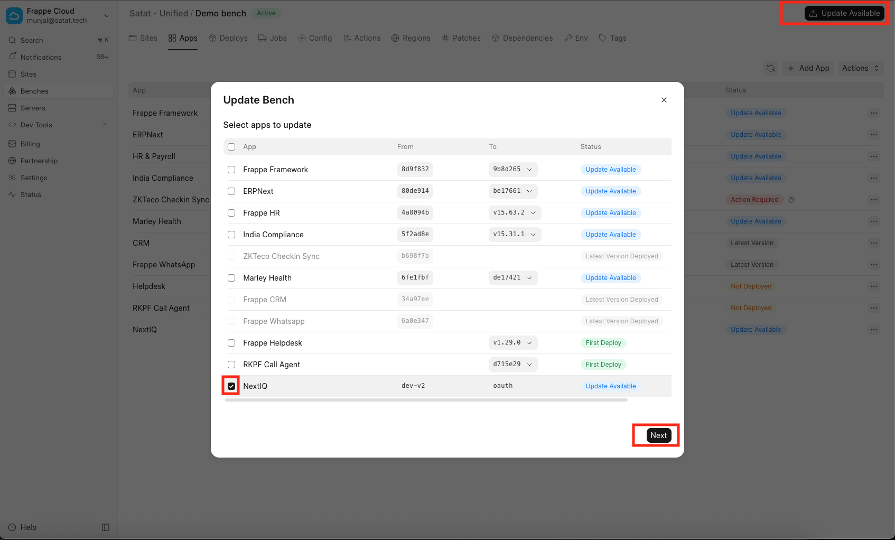
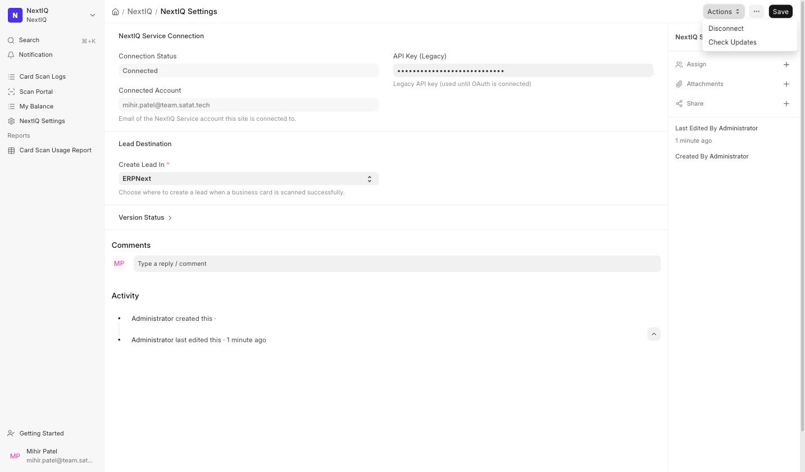
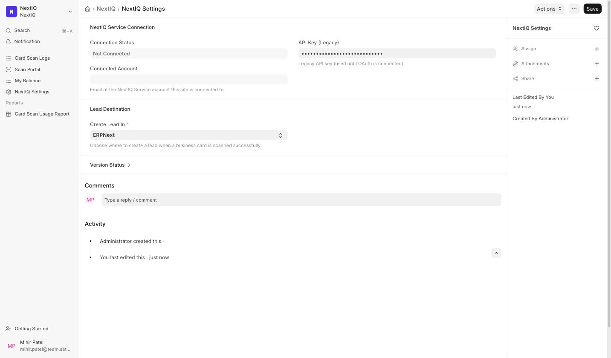
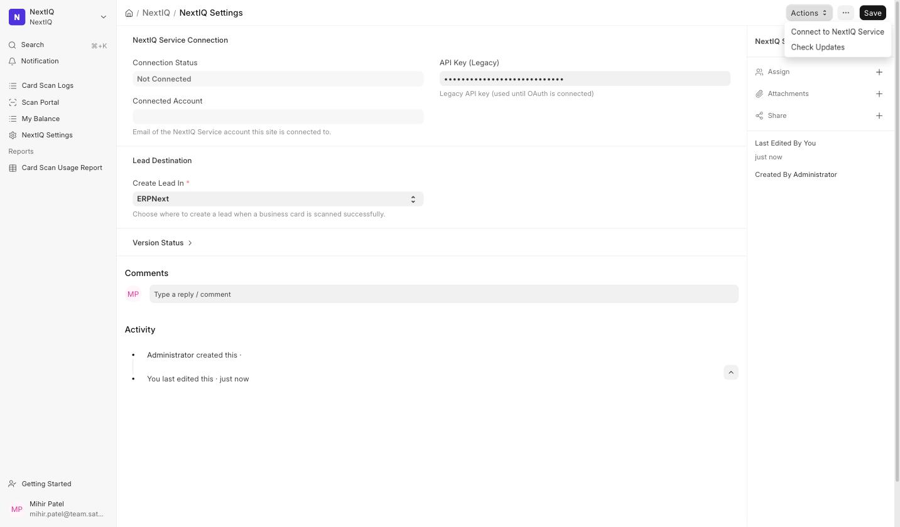

Managed hosting through the Frappe Cloud dashboard.
Self-HostedA bench on your own server, managed via the command line.
Six steps. Your scan history, remaining quota, and everything else on your account carry over automatically — there's nothing to re-enter.
Go to nextiq.in and log in. If you've never logged in before (your site has only used an API key so far), sign up instead at nextiq.in/signup — use the same email your account is associated with if you can, it helps match you to your existing history automatically.
From your Frappe Cloud dashboard, open your site's Bench, go to Apps, and select Update Available. In the dialog, check NextIQ and select Next, then select your site to deploy the update to.

Search for NextIQ Settings in the awesome bar (Ctrl/Cmd + K). You'll see a Disconnect button here — that's expected, even though you've never manually connected before.

This only resets that status label — it does not touch your API key, your scan history, or your quota. Your site keeps scanning normally.

This button now appears in its place. Make sure you're still logged in to NextIQ Service (Step 1), then select it — the connection completes instantly with no extra sign-in prompt.

You're returned to your site with a Connected confirmation.
Six steps. Your scan history, remaining quota, and everything else on your account carry over automatically — there's nothing to re-enter.
Go to nextiq.in and log in. If you've never logged in before (your site has only used an API key so far), sign up instead at nextiq.in/signup — use the same email your account is associated with if you can, it helps match you to your existing history automatically.
From your bench directory:
cd apps/nextiq && git pull origin main && cd ../.. bench --site your-site.com migrate bench restart
Search for NextIQ Settings in the awesome bar (Ctrl/Cmd + K). You'll see a Disconnect button here — that's expected, even though you've never manually connected before.
This only resets that status label — it does not touch your API key, your scan history, or your quota. Your site keeps scanning normally.
This button now appears in its place. Make sure you're still logged in to NextIQ Service (Step 1), then select it — the connection completes instantly with no extra sign-in prompt.
You're returned to your site with a Connected confirmation.